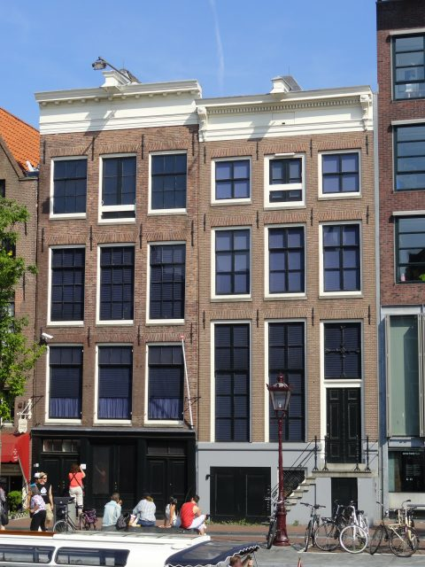

Vijf feiten over Amsterdam
- Amsterdam heeft 165 grachten die samen 75 kilometer lang zijn. Dit zijn meer grachten dan Venetië en Parijs!
- Amsterdam is volledig gebouwd op palen. Dat wist je waarschijnlijk al, maar dit vast nog niet: voor het Centraal Station waren 8.687 palen nodig. En voor heel Amsterdam? Naar schatting 11 miljoen!
- In 1928 hostte Amsterdam de Olympische Spelen. Het oude atletiekstadion in Zuid werd hiervoor gebouwd.
- Het smalste huis van Europa staat in Amsterdam. Deze vind je op de Oude Hoogstraat op nummer 22 en is slechts 2.02 meter breed.
- De Munttoren is een overblijfsel van de middeleeuwse Amsterdamse stadsmuur. Hij dankt zijn naam aan het feit dat er in de 17e eeuw munten werden geslagen.
Een rondvaart op de grachtengordel

Bezoekje aan de Nederlandse hoofdstad zonder een rondvaart op de grachten? Dat is net als Parijs bezoeken zonder de Eiffeltoren te zien. Het is trouwens de beste en leukste manier om alle bezienswaardigheden van Amsterdam te zien. Ze bestaan al meer dan 400 jaar en werden al snel het meest bekende symbool van Amsterdam. In 1999 werd de grachtengordel dan ook op de UNESCO Werelderfgoedlijst gezet. Tijdens een rondvaart op de grachten kan je de schoonheid van de machtige grachtenhuizen rustig in je opnemen. Hoewel je je in het midden van het centrum bevindt, kan je tegelijk aan de drukte van de stad ontsnappen. Zo’n rondvaart is niet voor niks ook enorm populair bij de Amsterdammers zelf. Op vrijdagnamiddag, bij mooi weer, zie je dan ook tal van after work feestjes op het water.
Het Anne Frankhuis
Net voor de Tweede Wereldoorlog uitbrak, vluchtte Anne Frank samen met haar familie naar Nederland om te ontsnappen aan de Jodenvervolging in Duitsland. Eenmaal in Amsterdam, hield de hele familie zich schuil in een achterhuis. Tijdens die periode hield Anne een dagboek bij waarin ze over het leven in het huis schreef. Jammer genoeg werd de familie Frank uiteindelijk toch verraden en vielen ze in handen van de Duitsers, waarna bijna alle familieleden stierven in één van de Joodse kampen. Later werd het dagboek van Anne Frank gevonden én uitgegeven. Het achterhuis waarin de familie leefde is nu één van de populairste musea in Amsterdam. Je vindt het museum aan de Prinsengracht, middenin het centrum van de stad. Een bezoekje aan het achterhuis geeft je een blik in haar leven. Het is heel intens, maar vooral een bijzondere en leerrijke ervaring over het leven tijdens de Tweede Wereldoorlog. Kortom, een bezienswaardigheid in Amsterdam die je niet mag missen.
Bron: Amsterdam- dingen te doen